|
|
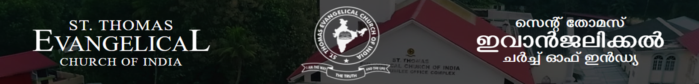
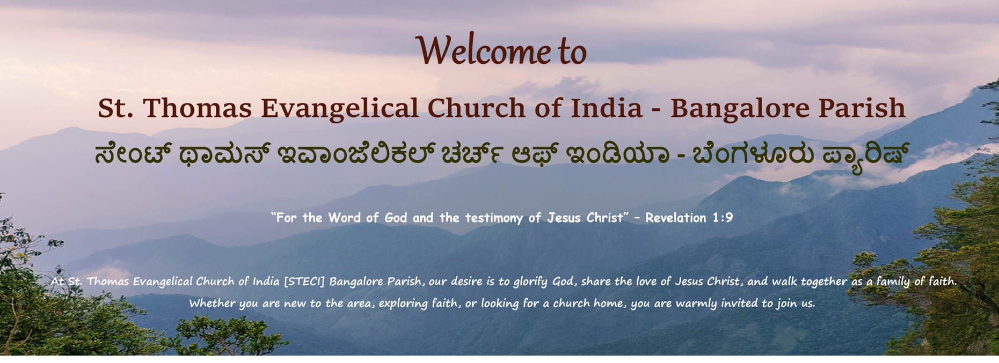
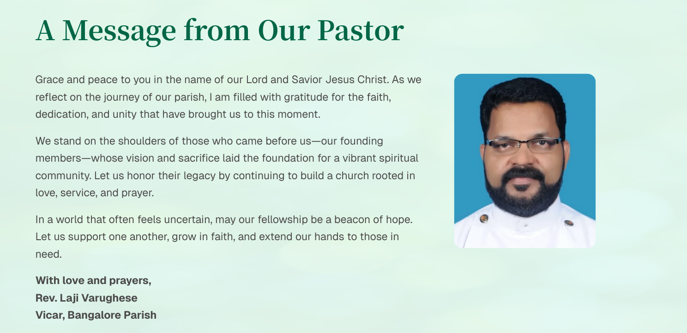
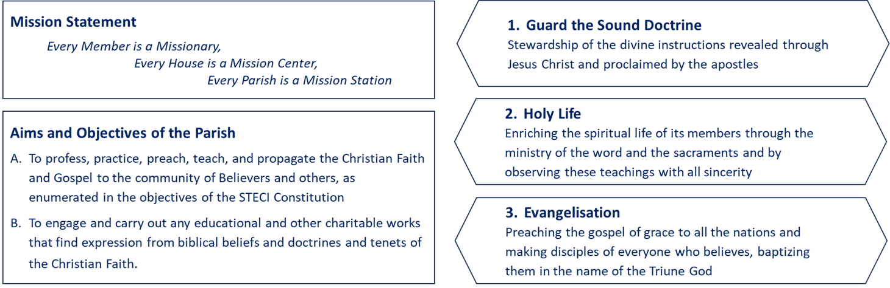
(Excerpt from Late Very Rev. P. T Chandapilla)
STECI is Historically Based
Apostle Thomas, one of the Twelve, was known as the Apostle of Christ to India. The ministry and life of Apostle Thomas were abundantly blessed with churches formed and left behind him. The churches of Kerala and the traditions of his martyrdom on the Coromandel Cost (nothing less than the St. Thomas Mount in South Madras, not far from the Mylapore coast) all need satisfactory explanation. That is what we try to do in our Church, along with other different ecclesiastical streams, to say Apostle Thomas originated Christian history in India after 52 AD. This is just about when Apostle Paul reached Europe with the Gospel.
The witness to Jesus Christ as Savior and God comes through nearly two millennia of Christian existence on the Malabar Coast of south India.
The STECI is related to this historical and traditional realities of India. This is important for us. So our name upholds this. There are other Christians in Kerala, equally valid, who do not wish to relate to Apostle Thomas. May be to them history is not all that significant. But in an ancient country like India this historical is good and valuable for us. So we must hold on.
STECI is Evangelical
It is a fact that through the years Christian church in Malabar and all over the world became more tradition bound than impregnated by the Scriptures. With the coming of the Church Missionary Society missionaries in Kerala nearly two hundred years ago did the Syrian Christians receive Bible of the 66 books in Malayalam tongue. The coming of the open Bible in Malayalam gave the sense of the evangelical message in the church, through the clear Word of God. Abraham Malpan among the Syrian Christians was like John Wycliffe of the West. He liberated the evangelical message in Kerala. That message was of special and revolutionary effect among the existing Christians, The Mar Thoma Church resulted from Abraham Malpan s course of teachings and evangelical reformation. The evangelical, Biblically true and related, message became clearer and finer until in 1961, that is until our church fathers brought into existence and from the Declaration of the STECI and proclaimed it at the great gathering of 25000 strong believers in Thiruvalla. That clearly placed Evangelical Church, our church, in the biblical and world evangelical stream the church catholic.
Thus the STECI is related to and based on the whole Bible. In that way, it is part of the reformed tradition in theology and doctrine. The Reformation and renewals have taken place in the Western Church through such leaders and John Wycliffe, Martin Luther and others. Our Church gets related to these reformations due to the doctrinal and theological cleansing which came to us through the proclamation of the Word of God and exposition of the Scriptures, and missionary impetus.
The Evangelical Church (STECI) is the group of believers who proclaims the whole counsel of God according to the Scriptures. This takes the whole Bible with its 66 books making up the evangelical message. The Bible, in this manner, becomes fundamentally necessary for us in the STECI. And we are evangelical.
STECI is for Church Planting
The STECI is a Church and is out to extend the church of Jesus Christ. Church planting becomes of the focus of the objectives of the Church. Along with all the other aims of the Church, evangelizing, disciple-making and Church planting take up the primary position in our goals. To these we are committed. The reformed churches are all so committed and Missions have launched out for this from living churches.
Church life is guided by the examples and dynamic of the Lord Jesus and His Apostles. The individual Christian is to pattern his life after Jesus. This means Christians are to be marked by holiness of life. That is to live even as Jesus lived 33 and 1/2 years on this earth. This is incarnation or the life of God in the world in any believer.
STECI is India Comprehending
There was a time when India was splintered in so many sections, groups and languages. From 1947 and the formation of the Indian Republic a new India emerged. It was an India superseding all her divergence, differences and division. That nation building still goes on. To this new India the STECI got oriented and related in 1961.We become a Church envisaging and comprehending the whole of India, with all her languages, caste divisions or the tiny geographical sector of Kerala were given up to take in the vastness and millions of people of India into our bulging swoop of advance.
This means the missionary programme and church planting need to comprehend the whole nation of India. Every language (there are 17 statutory languages in India) becomes the languages of the Evangelical Church. Reaching out in the lingua Francona, English, is a must to cover the significant sections of India. Our programme must be also in all the languages of India. Being an Episcopal Church such comprehensive programmes will mean local parishes in all languages of India. Indeed this is a heroic programme and challenging plan.
To such a vision our founding fathers geared this Church, STECI, and launched her in AD 1961. That is what shall guide and challenge her, and us. Various forces may try to limit us, tell us that we are a small people and it is enough to do this and so. We are called to go the full compass of claims and commitment. All our programmes, activities, plans and movements are with the purpose of living up to our name.
Along with the relevance to all of India we shall be concerned about the evangelization of the whole world. That is included in the evangelical commitment of the Great Commission of the Lord Jesus. Our Declaration calls us to this unfinished task as well.
We have great things to do. We have much way to go. Our destiny is to fulfill our life as a church according to God s purpose in Christ. This will determine and require each individual member fulfilling his/her part in this comprehensive call.
Sunday, 8:30am
Gather in the House of the Lord to raise our voices in praise and worship to Almighty God. It's a time to lift our hearts in reverence, express our gratitude, and remember the sacrifice of Christ through Holy Communion.
Sunday, 11:00am
The Sunday School is focus on nurturing children in biblical teachings, Christian values, and spiritual growth.
2nd Saturday, 4:00pm
Bangalore Parish is part of their vibrant ministry focused on engaging young people in spiritual growth, fellowship, and service.
1st & 3rd Sundays, 11:00am
Sevini Samajam described as a pillar of strength for the parish, with many sisters dedicating their time to spiritual growth and fellowship.
Wednesday, 7:00pm (online)
Weekly gathering for intercessory prayer and spiritual fellowship
Wednesday, 7:00pm (online)
To spend one hour in dedicated prayer, lifting up the personal, spiritual, and physical needs of individuals and families before God.
Saturday, 5:00pm
The Choir Practice is preparing singers and musicians for Sunday services, special events, and spiritual gatherings.
Friday, 7:00pm (online)
In-depth scripture study and discussion via video conference
President Vicar
& Sunday School H M
Rev. Laji Varughese
Vice President
Mr. K O George
Treasurer
Mr. Geojy Varughese Mathew
Secretary
Mr. Biju Jacob
Accountant
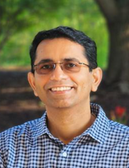
Mr. Justin K Paul
Jt. Secretary
& Lay Leader(Youth)
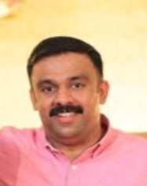
Mr. Vipin Kuriakose
Prathinidhi Sabha Member
& Council Member
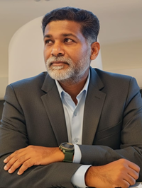
Mr. Roshan Sam Abraham
Prathinidhi Sabha Member
Mr. Anish Abraham
BKD Representative
Mr. Tobin Samuel
BKD Representative
Mr. Abin Kurien
Lay Leader
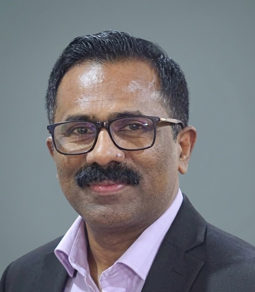
Mr. Jimmi George
Youth Union Secretary
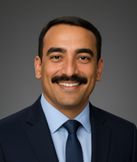
Mr. Sachin John
Sevini Samajam Secretary
Mrs. Seena Laji Varughese
Choir Leader
Mrs. Elizabeth Geojy
Committee Member
Mr. Prathap Oommen
Committee Member
Mrs. Rubin Mary John
Committee Member
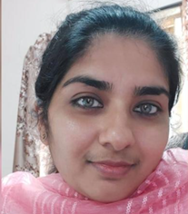
Mrs. Nisha Sachin
Committee Member
Mrs. Anju Joy
Committee Member
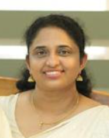
Mrs. Smitha Biju
Women Representative
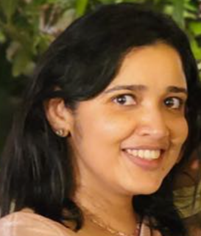
Mrs. Rinu P Kurian
Women Representative
Mrs. Asha Susy George
Presiding Bishop
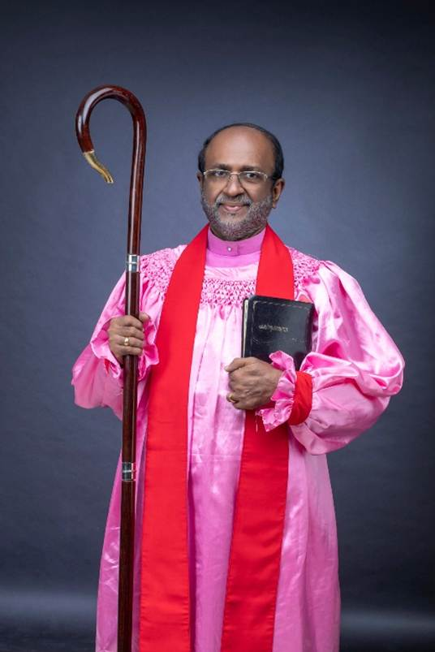
Most Rev. Dr. Thomas Abraham
Bahya Kerala Dioecian Bishop
Rt. Rev. Dr. Abraham Chacko
Other Bishops
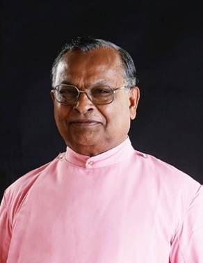
Bishop Dr. M. K. Koshy
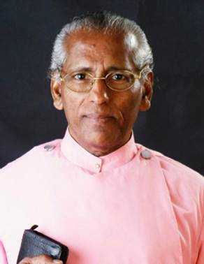
Bishop Dr. T. C. Cherian
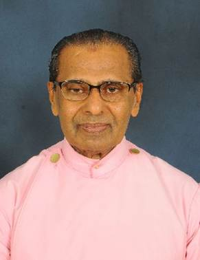
Bishop A. I. Alexander
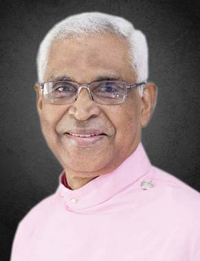
Bishop Dr. C.V. Mathew
Sabha Officers
Prathinidhi Sabha President
Rev. Dr. John Mathew
Sabha Secretary
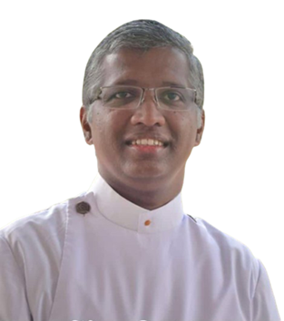
Rev. Saji Mathew
Sabha Treasurer
Rev. Saji Abraham
Visit Our Main Church: ST.THOMAS EVANGELICAL CHURCH OF INDIA
1. Principal Aim and Objective.
Our Church affirms that the purpose and work of the Church is the stewardship of the divine doctrines and teachings, as revealed through Jesus Christ and proclaimed by the Holy Apostles, and the preservation of these in their pristine purity, and the enrichment of the spiritual life of the members of the Church.
2. The Uniqueness of the Bible.
Our Church believes that the Holy Bible Consisting of 66 books 39 in the Old Testaments and 27 in the New Testaments is the sole authority for all matters concerning our faith and doctrines and that nobody has any authority to add to, or subtract from, the contents of the Bible, In other words, all questions regarding our faith and conduct have to be judged strictly in accordance with the word of God. We subscribe to the Nicene Creed because it is in conformity with the word of God. The uniqueness of an evangelical is that the/she will always stand within the four squares of the 66 books contained in the Bible. This is all the more reason why we should study the Bible very carefully.
3. Missionary Commitment.
While almost all the Churches believe in missionary work in one form or the other, our Church believes that evangelization (i.e. preaching, discipling and Church planting) is the main task of the Church. Each one belonging to the Church, irrespective of his/her age or position in life, has to proclaim the good news and live as His witness. The task of proclaiming the good news should not be left to be accomplished only by a few full-time evangelists. Each one of us is duty bound to supplement the efforts being made by full-time gospel-workers.
4. Salvation by grace through faith alone.
Our Church believes that salvation can be obtained only by grace through faith and not through rituals/good work. When a person confesses his/her sins and believes that Jesus died for his/her sins and that God has raised Jesus from the dead for the salvation of mankind, he/she will be saved. This is not by any work but by faith. Salvation that is offered to the believer is to be preserved by continuously abiding in the Lord with fear and trembling
5. Royal Priesthood.
Our Church believes in the Royal priesthood of all those who have accepted Christ. We believe that no bishop or clergy or other functionary of the church can be infallible. All these functionaries are expected to abide strictly by the provisions of the constitution of the Church and the articles of faith expressly declared at the time the Church was constituted. It may be noted that while constitution may be amended by complying with its provisions, no one has the right to change the above mentioned article of faith.
6. Christ the only Mediator (Why we do not pray to the Saints?).
Our Church believes that every Christian has the right to communicate directly with our savior Jesus Christ and no intermediary is necessary or permitted. The Bible teaches that the Christ is the one and only mediator between man and God. Therefore, our church strictly prohibits prayer to Virgin Mary or saints.
7. Prayer for the Living (Why we do not pray for the dead?).
Our Church believes that every human being has to decide, during his\her lifetime, whether or not to accept Christ. If anyone fails to accept Christ during his\her lifetime, the position can in no way be rectified or improved by rituals performed or prayers offered by such person s children or others after his\her death. The Church forbids the prayer for the dead and on the other hand, encourages intercessory prayer for the living. We should pray for, and try to help, all people living around us that may accept Christ during their lifetime.
8. Holy Trinity.
We believe in the Holy Trinity
God the Father,
God the Son and
God the Holy Spirit
9. Creations.
We believe that the Sovereign God created the universe out of nothing
10. Second Coming of the Lord.
We believe in the personal return of Lord Jesus Christ with glory to judge both the living and the dead
We believe in the final establishment of the Kingdom of God in its fullness.
We believe in the bodily resurrection of the dead the just will rise to live, and the unjust will rise to be condemned.
11. Sacraments.
a) The Lords Supper:
Our Church recognize the Lord s Supper and Baptism, both instituted by the Christ, as the two sacraments obligatory to all Christians. We believe that the bread and wine used in the Lords Supper are only the signs and symbols of the body and blood of Christ. We categorically reject the teaching that there is any mysterious or other presence of Christ in the bread and wine. The Lord s Supper is a thanks offering instituted by the Lord Himself to be observed till His coming, for the faithful to proclaim His death, remember Him and have communion with him and fellowship with the believers.
b) Baptism:
Baptism is the sign of dying for our sins with the Lord and of being resurrected with Him unto the newness of life, and a service of acceptance into the membership of the Church. Those who openly declare their faith in Jesus Christ should be baptized and accepted into the membership of the church. Our Church believes that children of Christian parents born again are also part of the Church and this is the reason why parents are allowed to opt for baptising their children. Baptism can be had only once and therefore, a second baptism which disparages the duly administered first baptism is totally unacceptable. Baptised children should be brought up in the Christian faith and they should confess their faith in the Lord openly and be confirmed before completing the age of 14.
If parents desire that their children personally confess their faith in the Lord Jesus Christ before being baptized, they may choose to do so. In such cases, the parents should dedicate their children during infancy. Before the children reach the age of 14, they should openly profess their faith in the Lord and receive baptism.
Finally, let us remind ourselves of the vital importance of staying spiritually alert and guarding our faith with unwavering devotion. In a world of distractions and shifting values, may we hold fast to the truth and walk faithfully with the Lord.
Let us remember the warning administered by St. Paul; It is for freedom that Christ has set us free. Stand firm, then, and do not let yourself be burdened again by a yoke of slavery - Galatians 5:1
St. Thomas Evangelical Church of India Bangalore Parish,
#17,18, Church Lane, Kavery Nagar, Defence Colony,
Horamavu Agara, Bangalore 560 013
Phone No:
97426 99915 (Vicar)
97426 99916 (Treasurer)
Email Address:
secysteciblr@yahoo.com (Secretary)
treassteciblr@yahoo.com (Treasurer)
Click the map image below for a navigable guide to the Parish Location.
St. Thomas Evangelical Church of India (STECI) is an Evangelical, Episcopal Church which firmly affirms that the Bible is the inspired, inerrant and infallible Word of God. All that is necessary for our salvation and living in righteousness is given in the Bible. It further affirms that the Church has a responsibility to preach the Gospel of Jesus Christ to all the nations of the world, especially to India. The church is engaged in active evangelism. The headquarters of this church is at Thiruvalla, a town in the state of Kerala which is in the Southwestern part of South India. The Bangalore Parish is one of the many vibrant communities under STECI, located in the heart of Bengaluru (Garden City). It plays an active role in worship, discipleship, and outreach, reflecting the church's broader mission.